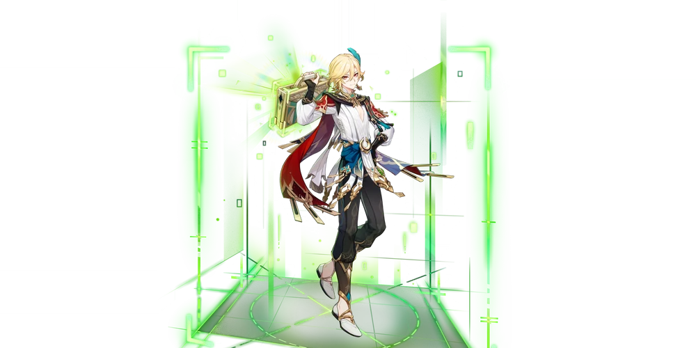
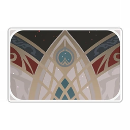

Кавех
 Знаменитый архитектор из Сумеру, поглощённый чрезмерным количеством забот. Эстет, обеспокоенный реальностью.
Знаменитый архитектор из Сумеру, поглощённый чрезмерным количеством забот. Эстет, обеспокоенный реальностью.
Регион: Сумеру
Глаз Бога: Дендро
Оружие: катализатор
Созвездие: Райская Птица
Созвездие персонажа
Выпадение персонажа

Карточка персонажа
О персонаже:
Земля Сумеру неистощима талантами, здесь живёт целая плеяда известных дизайнеров. Но когда речь заходит об архитекторах, люди первым делом вспоминают имя Кавеха. Выпускник Кшахревара, он считается лучшим архитектором последних десятилетий. Его называют Светочем Кшахревара. Однако сам Кавех не воспринимает похвалы всерьёз. Безусловно, слава и известность означают признание, но подчас они становятся для человека тяжёлым бременем. Известность вынуждает Кавеха вдвойне стыдиться своего банкротства. Обычному человеку ничего не стоит признаться, что он на мели, другое дело - когда ты знаменитый архитектор: подобные признания могут попросту испортить твою репутацию. Поэтому Кавех избегает разговоров о своём финансовом положении и делает вид, что его жизнь прекрасна и беззаботна. К счастью, люди этому верят, ведь он выдающийся архитектор с уникальным чувством прекрасного. Разве может быть, чтобы великий Кавех страдал от каких-то житейских неурядиц?
История 1(ур др 2):
Даже сегодня возле дворца Алькасар-сарай или в стенах Академии можно услышать, как студенты Кшахревара обсуждают Кавеха, своего знаменитого предшественника. Для них он гений, выдающийся архитектор, которому не было равных на протяжении всех последних десятилетий. Невероятное мастерство позволило Кавеху вписать своё имя в анналы Академии. При встрече со студентами из Кшахревара вам наверняка придётся выслушать, как сильно они восхищаются достижениями своего предшественника: чего стоит один дворец Алькасар-сарай, построенный по его проекту. А реставрация культового маяка в Порт-Ормосе, а реконструкция системы транспортных и подъёмных устройств в том же Порт-Ормосе! А ещё он первым предложил метод экологической оптимизации пространства! Все эти достижения сделали имя Кавеха нарицательным при определении успеха на архитектурном поприще. Многие коллеги мечтают о такой карьере: блестящий студент, которого сразу после выпуска пригласили работать в престижное архитектурное бюро, а через несколько лет он основал своё собственное дело. На этом все рассказы непосвящённых обычно заканчиваются: никто не знает правды, которую сам Кавех всеми силами старается скрыть. Он талантлив, этого не отнять, но вот жизнь Кавеха, к сожалению, далека от идеала, который представляют себе непосвящённые. Резюмируя свой прошлый опыт, Кавех сказал бы так: недоразумения досадны, но неизбежны. Люди иногда оказываются в плену стереотипов. Например, они представляют, что архитекторы загребают мору лопатой и становятся знаменитыми, сделав пару росчерков пера на бумаге. В глазах людей любой художник - ленивый, эгоцентричный, вспыльчивый и импульсивный человек, который любит покомандовать другими. Кавех не подходит под это описание. Его проекты отнимают много времени и усилий, и он очень серьёзно относится к работе. Он одевается элегантно и изысканно, но не судит о достоинстве проекта только по размеру вознаграждения. Его профессиональные принципы намного твёрже, чем у большинства жителей Сумеру, он считает архитектуру производным от искусства, но не позволяет себе жертвовать удобством и практичностью в угоду эстетике. Чтобы проект сочетал в себе красоту и функциональность, Кавех готов пойти на некоторые жертвы... Иногда он жертвует лишним декором, иногда - своими выходными, а иногда... даже вознаграждением. Долгие годы упорного труда привели его к успеху. Дворец Алькасар-сарай был завершён, и Кавех вернулся в Сумеру, увенчанный славой. Его коллеги без умолку хвалили легендарный дворец на вершине большого дерева, поражаясь необыкновенной фантазией его создателя. Они восхищались сочетанием функциональности и нарратива, точности в деталях и совершенства линий, благодаря которому дворец буквально преобразил горы, среди которых был построен. Никто не посмел сказать, что Алькасар-сарай был просто успешной авантюрой Кавеха. И никто не знал, что излишняя принципиальность в сочетании с чередой неудач на проекте привела Кавеха к банкротству. Правда скрыта от людей так же надёжно, как усилия, которые помогли Кавеху добиться успеха.
История 2(ур др 3):
Кавех родился в классической семье учёных. Отец окончил Ртавахист и работал в Академии, мать некогда училась в Кшахреваре и была известным в Сумеру архитектором, как впоследствии и сам Кавех. Под влиянием родителей Кавех с раннего детства интересовался архитектурой и строительством. Они часто сидели втроём в гостиной, Кавех играл в кубики, родители отдыхали. Они могли разговаривать даже без слов и всегда оставались настоящей семьёй. Тогда Кавех и узнал, что такое семья и дом. Счастливые времена скоро кончились. Незадолго до поступления Кавеха в Академию отец, поддавшись на его уговоры, решил принять участие в Турнире даршанов. Задания были не слишком сложными, и отец считался главным претендентом на победу, но всё же занял второе место, пусть и с небольшим отрывом от победителя. А после Турнира отец исчез, и вскоре домой пришла ужасная весть: отец Кавеха погиб в пустыне. Это было как гром среди ясного неба. Особенно сильно страдала мать Кавеха, она всегда была чувствительной натурой, и уход мужа совершенно её сломил, дни и недели она проводила в тревоге и тоске. А Кавех каждую ночь во сне видел, как отец улыбается ему и обещает, что вернётся домой с подарками. Кавех понимал, что отец не стал бы участвовать в Турнире даршанов, если бы не поддался на его уговоры. И не исчез бы после Турнира, и не погиб бы в пустыне. Но все мольбы были напрасны: прошлого не изменить. Смерть отца, горе матери... Всё это случилось из-за слов, которые он уже не мог вернуть назад. С этого дня он всегда будет жить в тени своей вины. Мать говорила, что отец был человеком с добрым сердцем и что жизнь рядом с ним была настоящим счастьем. После смерти отца она никогда больше не улыбалась. Их некогда тёплый и светлый дом превратился в скопление холодных пустынных комнат. Кавех часто видел, как мать сидит на диване, молча разглядывая свои дрожащие руки. Она больше ничего не могла нарисовать, даже мысли её путались. В каждую такую минуту Кавех чувствовал, как гигантская рука придавливает его к земле, он говорил себе: «Если бы не я, дома всё было бы совсем иначе». Он был ещё очень молод и мало что мог изменить. Терзаемый виной, он старался проводить как можно больше времени с матерью, не показывать своего горя, поддерживал её как мог, хотя знал, что его поддержка мало чем поможет. В такой обстановке Кавех достиг возраста поступления в Академию, сдал экзамены и был зачислен в даршан Кшахревар. Естественно, это означало, что отныне он будет проводить меньше времени с матерью. Пытаясь отвлечься, она отправилась в Фонтейн. Там она получила предложение о работе и по возвращении в Сумеру сообщила эту новость Кавеху. Кавех знал, что ему будет очень одиноко без матери, но всё равно согласился и отправился проводить её в день отъезда. Он долго смотрел вслед кораблю, покинувшему гавань. Он не хотел расставаться с матерью, но знал, что ей будет лучше уехать из края, который принёс ей столько боли. Не желая расстраивать мать, Кавех не признавался, как ему одиноко. Он заверил мать, что уже вырос и готов к самостоятельной жизни. Тем хуже было на душе, когда он просыпался посреди ночи от одиночества, боли или воспоминаний о некогда счастливой семье. Это было наказанием за то, что он уговорил отца участвовать в Турнире. Именно он виноват в горе, постигшем его семью, а значит, страдания заслуженны. Подобные мысли преследовали его день за днём. Можно сказать, что семья научила Кавеха заботиться о других, а ещё лишила его способности причинять вред кому-либо. Многие годы спустя он обнаружил, что оказался в ловушке своего характера и идеалов: он хочет помочь всем и каждому, кто просит его о помощи, и просто не умеет отказывать. И никакие добрые дела не избавили его от чувства вины. Он не способен проявить доброту к самому себе, потому что чувствует, что должен быть наказан за любой свой выбор. Если изобразить Кавеха в скульптуре, он будет статуей без единого видимого изъяна, которая полностью разрушится, стоит только обнаружить слабое место в её сердцевине.
История 3(ур др 4):
После выпуска Кавех устроился работать в архитектурное бюро под руководством других выпускников и преподавателей Кшахревара. У него было совсем мало опыта, и он оказался буквально завален сложными проектами. Но Кавех всегда считал себя упорным человеком, и теперь всё своё время и силы он отдавал работе. Целых два года он постоянно мотался между разными проектами, днями и ночами работая на других. Набравшись опыта, Кавех уволился из архитектурного бюро и открыл своё дело, у него появились клиенты, которым нравился его стиль. Многие обращались к нему, чтобы разработать архитектурный проект. Это было самое начало его карьеры, но благодаря упорному труду Кавеху удалось скопить приличную сумму. Но вскоре Кавех столкнулся с затруднениями. Рынок оказался намного прагматичнее, чем их учили в Академии, здесь всем правила мора, и подчас исполнить запросы клиентов было куда труднее, чем удовлетворить требования наставников в Кшахреваре. Кроме того, новые веяния в Академии тоже изрядно мешали Кавеху в работе. Он начал понимать, что его знакомый был прав: совместить карьеру и идеалы совсем не просто. Научные школы и течения в Сумеру постоянно менялись, многие учёные были открыты для критики и рефлексии, а изменения и улучшения в общественном устройстве только способствовали продвижению такого образа мыслей. Поэтому некогда почитаемые объекты в один прекрасный день могли оказаться под градом критики, как это случилось с печатными книгами или произведениями искусства. Но кроме вовлечённых людей, никто не знал, какая участь постигла в Сумеру работников искусства. По мере роста значимости академических достижений учёные стали всё больше внимания уделять чистой науке и прикладным технологиям. Постепенно идеи мудрецов радикализировались, и мысль о бесполезности искусства распространилась по всему обществу. Работники искусства превратились в парий, а дисциплины, которые были хоть как-то связаны с искусством, просто отбрасывались. Многие проекты, в которых принимал участие Кавех, теперь больше напоминали конвейер. Его предложения отклонялись заказчиками на том основании, что они «излишне перегружают объект», а «все элементы архитектуры должны быть исключительно функциональны». Раньше он стремился сочетать в каждом своём проекте эстетику и утилитарность. Но теперь искусство стало объектом насмешек, люди отрицали необходимость и ценность его существования. Поэтому у Кавеха почти не осталось свободы в работе. Он всегда считал архитектуру видом искусства и был категорически не согласен с распространённым мнением о его бессмысленности. Но в работе ему требовалась техническая поддержка и инвестиции, поэтому он не мог порвать связь с теми, кто считал иначе, и тем более не мог свободно выражать своё мнение - это повлекло бы отзыв инвестиций и бросило тень на многих его коллег. Работа вынуждала Кавеха предавать свои идеалы, и он решил взять длинный отпуск. Вернувшись домой, он получил письмо из Фонтейна. Мать писала, что встретила человека, с которым хочет провести остаток жизни, что собирается выйти за него замуж и ждёт свадьбы с трепетом и надеждой. Кавех ответил на письмо искренними пожеланиями счастья и отправился в Фонтейн поздравить мать с новым замужеством. Свадебная церемония прошла просто и скромно, гостей пришло немного. Сначала Кавех обрадовался, вновь увидев на лице матери улыбку, но потом почувствовал странную растерянность. Мать оставила ему всё своё имущество в Сумеру. Вернувшись в Сумеру три дня спустя, он с новой силой почувствовал пустоту в родительском доме. Он лежал на диване, ощущая небывалое прежде одиночество. Теперь он понял, как правы были мудрые учёные прошлого: «Живи по совести, даже если придётся отдать за это всё, что у тебя есть».
История 4(ур др 5):
По мере того как Кавех продолжал работать в строительстве, его недовольство нынешним состоянием общества становилось всё сильнее. Именно тогда наступил переломный момент. Богатая негоциантка, госпожа Сангема-бай, обратилась к нему с заказом на строительство частного особняка. Госпожа Сангема-бай уже успела прославиться, но до момента их первой встречи Кавех понятия не имел, что «госпожу» зовут Дори, и не осознавал в полной мере ни её могущества, ни размера состояния. У неё было всего два пожелания в отношении особняка: большой и роскошный. Кавех пытался выяснить предпочтения в стиле и другие детали, но её это совершенно не волновало. Даже среди его клиентов Дори выделялась эксцентричной манерой поведения. Она занималась торговлей, но, казалось, её мало заботило мнение исследователей. Она хотела построить особняк в уединённом месте - для деловых нужд, так утверждалось, - и Кавеху было велено не задавать слишком много вопросов и просто постараться возвести поистине внушающее благоговение здание. Что касается эстетики, Дори это нисколько не волновало и она не вмешивалась в работу Кавеха. Кавех сразу осознал уникальность этого заказа. Проект особняка без ограничений означал, что он может дать волю своему творчеству. «Сторона А» выделяет средства, а «Сторона Б» выполняет работу - разве не так ведутся дела? И разве не было бы абсолютным безумием позволять академическим взглядам ограничивать подобное строительство? Поэтому Кавех с неожиданным рвением взялся за проект и посоветовал Дори внести некоторые поправки в его роль как «Стороны Б». Великой негоциантке не пристало просто жить в горах. Если этому поместью суждено войти в историю, оно должно быть поистине легендарной красоты! Сад был обязательным условием, при этом цветы должны быть тщательно подобраны, разумеется, с привлечением профессиональных ботаников. Концепция должна быть смелой, планирование - добросовестным. В самом здании на первое место следует ставить практичность: на роскошном фундаменте будут располагаться складские помещения и комнаты для отдыха. А что касается места... склон северных гор вполне подходит. Просыпаясь, госпожа Сангема-бай будет каждое утро любоваться великолепным пейзажем. Хотя Дори неизменно настаивала на том, что особняк не обязательно должен находиться в непосредственной близости от обрыва, инженерный дух и художественные амбиции Кавеха убеждали его в обратном. В результате проект успешно начался, и под неусыпным оком Кавеха работа шла полным ходом. Однако его замыслам не суждено было так легко осуществиться. Несмотря на то, что на этапе выбора места для строительства Кавех продумал всё до мелочей, он не мог предвидеть, с какой скоростью зона Увядания будет расширять свою сферу влияния в тот год. Одной безмятежной ночью, когда работа была завершена на семьдесят процентов, Увядание тихо уничтожило всё, что было сделано. Вид опустошённого остова его творения поразил Кавеха, как удар грома, а Дори, примчавшаяся, едва узнав об этом, в ярости потребовала, чтобы Кавех прекратил работу над проектом. Хотя лесные дозорные быстро прибыли на место и устранили зону Увядания, разрушенное здание было невозможно восстановить. Кавех понимал, что такой шанс вряд ли представится снова, и умолял позволить ему закончить Алькасар-сарай. Дори с особой резкостью указала на ключевой момент: именно Кавех настоял на выборе места строительства. Как продолжить работу над проектом, если строение уничтожено, а вместе с ним сгинули и все вложенные в него средства? Если потребуется восстановить здание, кто возьмёт на себя возмещение убытков? Кавех сидел на груде руин и размышлял об этом всю ночь напролёт. У него были сбережения и имущество, которое осталось от его родителей. Когда-то это был его дом, но теперь это лишь пустое здание. Что такое дом? Архитектор вроде него лучше других знал, что строение без семьи или людей, живущих в нём, нельзя назвать родным домом. Это просто здание. Когда взошло солнце, Кавех вернулся в город Сумеру и продал свой дом. Сложив все вырученные от продажи деньги и свои сбережения с гонораром за проектирование, который он получил от Дори, Кавех смог собрать семьдесят процентов необходимой суммы, а остальное внесла Дори. Одним прекрасным солнечным днём состоялось торжественное открытие Алькасар-сарая. Кавех отдал всё, что у него было, чтобы построить легендарный дворец, который ему не принадлежал. На этом проекте он не заработал ничего. Даже наоборот, задолжал Дори крупную сумму в счёт будущих работ, чтобы покрыть небольшой перерасход средств на строительство. Хотя внешне он всячески противился этому, в глубине души он знал, что не может отрицать того факта, что действительно должен эту сумму. Его снова снедало старое чувство вины, и госпожа Сангема-бай, проницательная негоциантка, сразу поняла, что он платит не за неё, а за свои идеалы. Если кто-то хочет положить всё состояние на алтарь своих идеалов, кто она такая, чтобы останавливать? Строительство - это в конечном счёте просто торговля, но идеалы бесценны. Что же до того, как Кавех впоследствии оказался бездомным, то это уже совсем другая история.
История 5(ур др 6):
Обанкротившись, Кавех впал в депрессию. Алькасар-сарай ненадолго заполнил дыру в его сердце, но в то же время он в очередной раз убедился, что, сколько бы он ни делал для достижения своих идеалов, этого всегда было недостаточно. У него не осталось ориентиров, и он увяз в мире, где и шагу ступить нельзя без моры. Кавех с юных лет привык сохранять достоинство и не хотел говорить своим коллегам и друзьям, что остался почти без единой моры в кармане и вынужден был продать всё своё имущество. Он отправился в таверну, где заказал несколько бутылок и предался болтовне, чтобы утешить себя. После первой же бутылки он уснул за столом, а потом очнулся на том же самом месте. Ламбад, владелец таверны, по доброте душевной выделил ему место и бесплатные напитки, а в благодарность Кавех помог ему обустроить зону отдыха на втором этаже таверны. Время от времени он встречал здесь друзей со времён учёбы в Академии, и с ними он делал вид, что пришёл просто выпить и почерпнуть вдохновения. Так он провёл больше двух недель, пока не встретил того, кого больше не называл другом. Когда речь заходит о старых друзьях Кавеха, неизменно всплывает имя аль-Хайтама из Хараватата, действующего секретаря Академии. Аль-Хайтам поступил в Академию позже своих сверстников, но его оценки были лучше, чем у большинства. Никто не знал, кто он такой и где его найти, было известно лишь, что он получал высокие баллы. А когда упоминалось его имя, даже старожилы Кшахревара качали головой и говорили, что он слишком умён и с ним трудно поладить. В тот год Кавех пережил уход матери и жил один. Иногда он встречал этого младшекурсника в библиотеке и из любопытства заговаривал с ним - так он познакомился с гением Хараватата аль-Хайтамом. Но как показало время, одно лишь принятие желаемого за действительное не делает их друзьями. Кавех быстро понял, что аль-Хайтам, который был младше его на два года, безусловно, талантлив и умён, но совершенно не похож на него ни по характеру, ни по отношению к людям, ни по направлению исследований, ни по убеждениям. Время, проведённое Кавехом в Академии, оставит у него множество воспоминаний, наименее приятным из которых станет их общий с аль-Хайтамом проект. Они признавали способности друг друга и решили провести исследования древних сооружений, рун и лингвистики, причём Кавех предложил аль-Хайтаму выбрать тему. Поначалу другие студенты также принимали участие в работе группы, но по мере продвижения проекта они постепенно переставали успевать. Тогда Кавех впервые столкнулся с жестокой и слишком очевидной разницей в талантах. В Академии талант и ресурсы тесно связаны между собой, и все это прекрасно понимали. Как сказал бы аль-Хайтам, в некоторых вопросах верхняя граница определяется талантом, а нижняя - трудолюбием. Обычных людей и гениев отделяют друг от друга различные практические реалии, и им не нужно заставлять себя вписываться в группу, к которой они не принадлежат. Кавех, однако, твёрдо верил, что всё это - результат препятствий, возникающих в процессе, и что мудрость должна быть доступна не только избранным. Кавех тратил много времени и сил на помощь другим студентам, чтобы не дать им отказаться от участия в проекте, тем самым взваливая на свои плечи непосильную ношу. Аль-Хайтам упорно придерживался противоположной точки зрения, считая взгляды Кавеха слишком идеалистичными, ведь научная деятельность - это не благотворительность, и временное спасение не изменит реальности. Так между ними начали возникать разногласия. Наконец, настал день, когда только два человека продолжали работать над этой темой: аль-Хайтам и Кавех. Разногласия между ними достигли своего пика и хрупкий мир рухнул. Кавех утверждал, что аль-Хайтам чересчур эгоистичен, что к нему могли бы лучше относиться, если бы он почаще помогал людям. Аль-Хайтам, в свою очередь, указывал, что непрактичный идеализм Кавеха - это способ бегства от реальности, что когда-нибудь это станет бременем для его существования, а истинной причиной такого альтруизма является не что иное, как неизбывное чувство вины. В тот момент Кавех почувствовал, что тот, кто был его лучшим другом, может ранить его. Аль-Хайтам видел реальность, с которой Кавех не мог смириться и с суровостью которой впервые столкнулся. Кавех решительно заявил, что он сожалеет о том, что подружился с этим слишком умным человеком. Они перестали общаться в одночасье. Аль-Хайтам удалил своё имя из этой работы, а Кавех в ярости разорвал свой экземпляр на части - и только потом с глубоким сожалением собрал его обратно. Он чувствовал, что не сможет изменить своего друга, как и друг его. Впоследствии они неоднократно вступали в перепалку в научных журналах, критикуя точку зрения друг друга. До этого «Расшифровка рунической письменности и архитектурной философии цивилизации царя Дешрета» достигла большого прогресса. Её достижения на лингвистическом фронте заполнили различные пробелы в грамматической логике некоторых древних малых языков, что позволило успешно интерпретировать многие важные тексты. Аналогичным образом, результаты, достигнутые в области архитектурных исследований, позволили усовершенствовать несущие конструкции для ряда особенностей рельефа Сумеру, что значительно улучшило жизнь людей, живущих в отдалённых регионах. В целях поощрения проекта Академия даже специально выделила для него исследовательский участок. К сожалению, из-за нехватки рабочей силы и единого видения со стороны основных исследователей проект в итоге был полностью остановлен. Этот неудачный проект стал неотъемлемой частью прошлого Кавеха. Шли годы, а действительность снова и снова сбивала его с ног, и Кавех был вынужден признать, что его упорство не всегда приносит пользу. Только оказавшись без единой моры в кармане, он наконец понял глубокий смысл слов своего друга. Человек, желающий подняться в небесный сад по лестнице из воздуха, неизбежно поставит свой подвиг на пустую ступеньку и рухнет на землю. Как гений, Кавех жаждал принадлежать группе, подсознательно боясь отделиться от неё, - в этом заключалась разница между ним и аль-Хайтамом. Вернёмся в таверну. Кавех был шокирован, увидев аль-Хайтама, который случайно зашёл купить спиртное. Аль-Хайтам, в свою очередь, сразу понял, что Кавеху очень плохо. Он давно находился в подавленном состоянии, и поэтому хотел выплеснуть все свои горести прямо здесь и сейчас. В конце концов, от проблем не спрячешься, так какой смысл скрывать их от того, кого он когда-то называл другом? Он жаловался на множество вещей, умолкнув, лишь когда они вышли из таверны в темноту ночи, и его взгляд устремился туда, где находится место, которое он когда-то называл своим домом. Аль-Хайтам видел Кавеха насквозь и, выслушав его, задал непростой вопрос: «Тебе удалось воплотить в жизнь свои идеалы?» Только реальность может заставить исследователя признать, что он ошибался, но Кавех не знал, что считать реальностью. Он по-прежнему твёрдо верил, что его идеалы сами по себе не были ошибочными, но виной всему был его способ их воплощения. Нельзя сдаваться. Даже если человек пытается что-то исправить, делая добро, результаты будут иметь значение для других. Даже если он не смог попасть в обетованную землю своих идеалов, это не значит, что сияние и притягательность этого царства следует отрицать. Призрачные реалии, вроде той, как он волею судеб оказался бездомным в доме своего друга, или как этот дом, теперь уже принадлежащий секретарю, когда-то выделила им Академия, или как этот излишний академический актив вообще не превратился бы в жильё в результате многочисленных схем, если бы Кавех не решил от него отказаться... Или как, хорошо зная, что аль-Хайтам никогда не делал добрых дел просто так, Кавех мучился совестью и упреждающе заговорил о помощи по хозяйству, а в результате на него сваливались все дела по дому... Это может быть раздражающим фактором для человека, находящегося на дне, но это также является доказательством того, что друг, которого нельзя изменить, - это и есть незыблемое прошлое, которое может быть у человека в жизни. Рациональность и чувствительность, язык и архитектура, знания и человеческие чувства... Вещи, которые невозможно объединить, составляют две стороны зеркала, отражающего сам мир.
Старый альбом
Старый толстый альбом в кожаной обложке. В нём не только рисунки, но и вырезки. Владелец, видимо, использовал его как своего рода книгу памяти. Страница 1: «Основы архитектурного рисунка», автор: Фаранак. Приписка: «Книга мамы. Мне кажется или обложка выцвела?» Страница 15: Простой рисунок, на котором изображён человек, попавший в зыбучие пески. Он был скрыт, потому что страницы до и после него склеены. Приписка: «Отец... Прости меня. Я не знаю, что мне написать, чтобы... Пожалуйста, прости меня». Страница 26: Форма заявки на тему. Приписка: «Прекрасное начало. Трудно найти такого умного соавтора». Страница 31: Академические заметки и архитектурные чертежи. Приписка: «Наши взгляды совпадают, и они целостные». Строчка зачёркнута. «Наши взгляды противоречат друг другу, но именно в противоречии может родиться больше гипотез и рассуждений». Строчка оставлена. Страница 42: Обложка диссертации, которая была разорвана, а затем снова собрана воедино. Без приписки. Страница 47: Отрывок из журнала, выпускаемого учебным заведением. Оригинальное название неизвестно, а сохранившееся содержание выглядит следующим образом: «Эгоист не может понять конечного пункта мудрости. Хотя все мы можем претендовать на место в этом великом зале знаний, мы должны понимать, что именно люди, а не знания, делают наш мир таким, какой он есть. У знания должно быть вместилище. Универсальные ценности, естественно, должны обладать определёнными достоинствами, чтобы называться таковыми, и отрицание их общего значения не означает, что соответственно возникнут точки зрения меньшинства. Так обстоит дело с эстетикой. Красота - это нечто объективное, существующее в человеческих сердцах. Она не потеряет своей ценности только потому, что некоторые люди не могут её понять». «Рассматривать себя как некое могущественное вместилище - значит поддаться узости мышления исследователя. Знайте, что истина никогда не существовала ради отдельных людей. Логика мира сосуществует с природой, и это нелегко изменить, независимо от того, трактуется это как таковое или нет. Чрезмерная вера в объект точно так же является саморазоблачением, проявлением недостатка доверия к субъекту. И тому, кто достаточно уверен в себе, не нужно постоянно использовать множественные формы обращения, такие как "мы". Одного человека достаточно для отстаивания позиции - в этом можно быть уверенным». Страница 56: Нарисованный от руки эскиз Академии. Приписка: «Я, вероятно, не вернусь сюда работать, но я надеюсь, что когда-нибудь смогу вернуться сюда в качестве оратора». Последующие 20 страниц испещрены расписанием работы и записями с чертежами. Почерк меняется от аккуратного к неаккуратному, что говорит о том, что времени становится всё меньше, а автор очень занят работой. Страница 85: Набросок слишком прекрасен, чтобы называть его таковым. Это какое-то величественное сооружение в миниатюре. Приписка: «Вполне осуществимо, но требует слишком много ресурсов. Необходимо продумать детали». Страница 91: Беспорядочные каракули. Повсюду. Без приписок. Страница 92: Свидетельство о передаче недвижимости. Приписка: «Возможно, это импульсивный поступок с моей стороны, но я не могу отказаться от возможности, которая наполняет меня подобной надеждой. Надеюсь, всё пройдёт гладко». Страница 101: Несколько мелких каракулей. Приписка: «Всё! Я не могу рисовать. Я не буду рисовать завтра». Страница 107: Изображение интерьера. Похоже на второй этаж таверны Ламбада. Приписка: «Смогу ли я когда-нибудь сделать что-нибудь лучше?» Страница 112: Данные об аренде. Приписка: «Я бы не стал называть это чем-то плохим... Но почему всё так обернулось? Этот парень никогда бы не приютил меня просто так... но что я могу для него сделать?» Страница 115: Проект дизайна набора инструментов. Приписка: «"Мехрак" - это древнее слово, которое я использовал в качестве названия для этого набора инструментов. Оно означает "частичка света". Больше всего я надеюсь, что он сможет правильно меня понять».
Глаз Бога(ур др 6):
Ещё в студенческие годы Кавех часто занимался различными проектами и вместе с другими студентами осматривал руины. В то время они были молоды и не могли проникнуть в самое сердце гробниц, но тем не менее им удалось достичь значимых результатов. Изучение древних руин сопряжено с риском, и, несмотря на профессионализм, исследователи могут оказаться в опасности. Во время одной из таких экспедиций произошло обрушение. Если бы Кавех не вытолкнул из гробницы двух своих товарищей из Кшахревара, они бы погибли. Сам Кавех, хотя и отделался лёгкими ранениями, не смог вернуть былой настрой своим товарищам. Он был убеждён, что помогает им достичь результатов, но вместо этого большинство из них испытывали беспокойство из-за ситуации и ощущаемой разницы в способностях и покидали проект. Кавех знал о существовании Глаза Бога. Считалось, что он появляется в моменты опасности, но он уже пережил один такой смертельно опасный момент во время экспедиции, но не только не получил благосклонности богов, но и оказался в ситуации, когда ему пришлось спасать всех. Спустя годы Кавех окончил обучение, покинул Академию и погрузился в работу. К тому времени он перестал думать о Глазе Бога и размышлять о том, кто может стать его обладателем. Ходили слухи, что получить такого рода божественную благосклонность могут только те, у кого есть устремления. Возможно, он просто не был таким человеком. Его последующая жизнь была размеренной, как течение реки. Он занялся работой, периодически бывал перегружен, отсутствие художественного признания вызывало у него чувство усталости. Его мать создала новую семью в Фонтейне, оставив ему дом и другое имущество... Он ничего не мог поделать с этим, всё происходящее казалось ему совершенно бессмысленным. Так продолжалось до того дня, когда Увядание уничтожило первую версию Алькасар-сарая, и он сидел на его обломках, размышляя всю ночь напролёт. Вдруг он смело решил поставить всё на кон в погоне за мечтой. Вернувшись домой, он быстро обошёл все соответствующие инстанции, чтобы привести дела в порядок. По стечению обстоятельств, этот день оказался удачным для сделок, и Кавех потратил всего полдня на передачу прав собственности на свой дом и получил мору, которую впоследствии направил на этот проект. Уладив множество мелочей, Кавех в последний раз вернулся в старый дом, в котором прожил много лет. На своей тарелке он выложил упрощённую версию Алькасар-сарая, полил её соусом и йогуртом, сделав тем самым себе прекрасный перекус. Это несложное блюдо его научил готовить отец. После смерти отца он редко готовил его, и лишь импульсивное желание заставило его попытаться повторить это блюдо. Нельзя сказать, что это было его любимое блюдо, но внезапная горечь подступила к горлу, когда ему пришлось раскрошить лепёшки, чтобы начать есть. Внутри разрушенного хлебного дворца лежал мерцающий Глаз Бога. Кавех смотрел на него, не веря своим глазам. Он появился с опозданием на несколько лет, но лежал перед ним, восхитительный, как фантастическое небесное царство - и, к счастью, он был гораздо ближе, чем его идеалы.